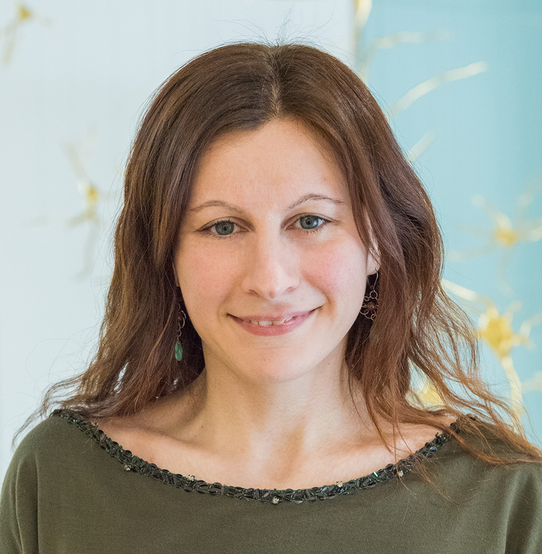

Marta Kryven
Google Scholar · CV · Email · LinkedIn
I am an Assistant Professor at Dalhousie University, departments of Computer Science, Psychology and Neuroscience.
I study the computational principles underlying human and artificial intelligence. My recent work has focused on how humans and LLMs learn abstractions from limited experience, construct complex causal explanations, and plan with compressed world models. My lab combines behavioral experiments, Bayesian inference, program induction, and machine learning to develop computational theories of intelligence and translate insights from human cognition into AI.
My research has appeared in NeurIPS, ICLR, Nature Computational Science, PLOS Computational Biology, and Cognitive Science, including a NeurIPS 2025 Spotlight paper and work featured in Nature Computational Science's annual research highlights. I serve as Conference Co-Chair of CogSci 2027, on the Proceedings Committee of CCN 2027, and as an Area Chair for ICML 2027. I also founded the Computation and Cognition Symposium, bringing together researchers across cognitive science, neuroscience, and AI.
Consulting & Collaboration
I collaborate with academic researchers, industry partners, and public-sector organizations on questions involving human intelligence, artificial intelligence, and decision-making. I also provide professional consulting on AI capabilities and evaluation, human–AI collaboration, behavioral modeling, and experimental design. For consulting engagements with commercial organizations, advisory engagements, or tailored workshops, please visit Northlight Intelligence or send me an email.
Apply to be a Student Researcher with Us
We welcome students who can devote 6 months to 2 years of time working with us, at a minimum of 10 hours a week. You can be of any career stage, from anywhere on the earth. Visit the Computation and Cognition Lab page to learn more.